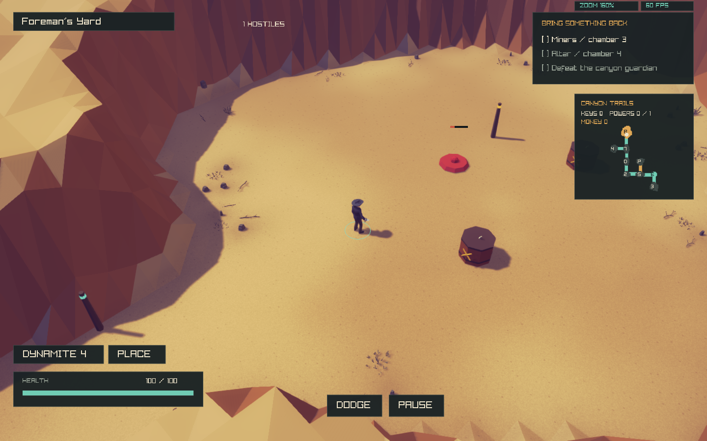
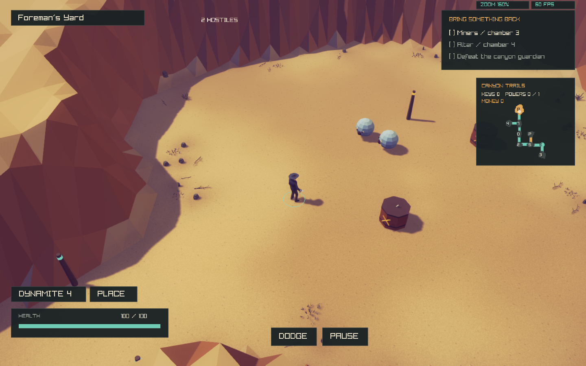
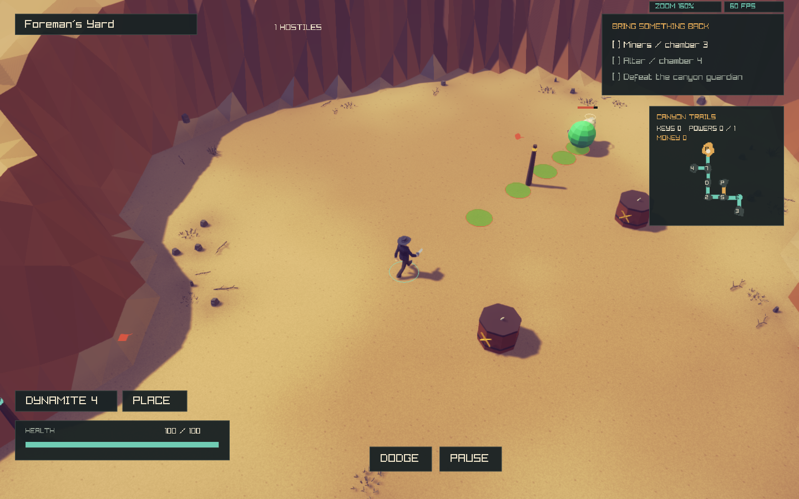

All26ordinary Sub Horf combat variants are enabled and covered by scoped tests. Champion-specific loot and exact native rarity are separate remaining work.
52stat/contact/Charm scenarios and52death-affiliation scenarios cover every type. Six affected native suites pass across the initial batch and corrected-fixture retry. Natural preparation produced8championed SubHorfs of8types across12seeded test runs, respecting stage gates. Test-only100percent chances make rare actors reachable; production tuning is unchanged.
Detailed checkpoint · Behavior checks · Initial regressions · Corrected-fixture retry · Ordinary Sub Horf
| ID | Champion | HP multiplier | First source stage | Combat behavior |
|---|---|---|---|---|
| 0 | Red | 2.6 | 1 | More HP |
| 1 | Yellow | 1.5 | 3 | Faster, reduced champion HP |
| 2 | Green | 2.0 | 1 | Damaging green creep |
| 3 | Orange | 2.0 | 1 | Coin loss on admitted player hits; projectile effect survives shooter removal |
| 4 | Dark Blue | 2.0 | 1 | Slower movement |
| 5 | Dark Cyan | 2.0 | 1 | Explosion on death; retained under queue pressure |
| 6 | White | 2.0 | 5 | Invulnerability until other non-White threats die; White pairs cannot softlock |
| 7 | Gray | 0.66 | 1 | Less HP and slower movement |
| 8 | Translucent | 2.0 | 5 | Crosses interior obstacles/pits; spectral shots retain sealed room bounds after shooter removal |
| 9 | Black | 2.0 | 5 | Visibility oscillates; damage briefly reveals |
| 10 | Magenta | 2.0 | 1 | Periodic short-range shot in facing direction |
| 11 | Violet | 2.0 | 5 | Attracts player and player projectiles, capped aggregate force |
| 12 | Dark Red | 2.0 | 1 | Flesh pile, regeneration, can be finished off; source-frame armored Level2 integration checked |
| 13 | Light Blue | 2.0 | 1 | Eight radial death shots; retained capacity handling |
| 14 | Camouflage | 2.0 | 1 | Low visibility; damage reveals |
| 15 | Pulsing Green | 2.0 | 1 | Two ordinary copies on death, retained births |
| 16 | Pulsing Gray | 2.0 | 1 | Pulsed player-projectile repulsion; never pushes player |
| 17 | Light White | 2.0 | 1 | One owned Eternal Fly; release plus additional Attack Fly on death |
| 18 | Small | 0.66 | 1 | Smaller body/collision and less HP; faster; no extra shot damage |
| 19 | Large | 3.0 | 1 | Larger appearance, unchanged collision, more HP, slower, stronger contact |
| 20 | Pulsing Red | 2.0 | 5 | Heals other enemies; excludes self, other healers, Bishops, piles and hazards |
| 21 | Pulsating | 2.0 | 5 | Attack Fly on damage with cooldown; max five living/queued owned flies |
| 22 | Crown | 6.0 | 5 | Sixfold HP; other ordinary enemies turn yellow without combat-stat bonuses |
| 23 | Skull | 2.0 | 5 | Necronomicon-style room damage on death; stronger contact |
| 24 | Brown | 2.0 | 5 | Real destructible dung trail; excludes occupied space/door approaches and checks route connectivity |
| 25 | Rainbow | 3.0 | 5 | Fast, triple HP, creep, orbiter, facing shots, attraction, death explosion and eight shots; retries do not repeat explosion |



These captures and tests do not certify every native interaction or all26visual states. No full-port acceptance promotion.